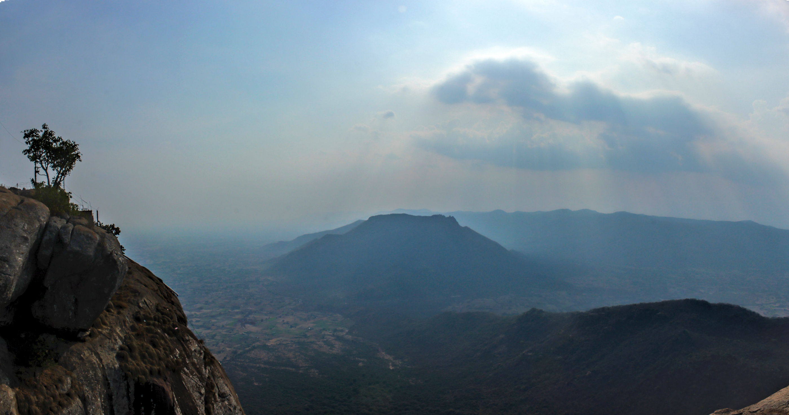

தமிழ்நாட்டில் பார்க்க வேண்டிய இடங்கள்
அரியலூர்
அரியலூர் சோழ வம்சத்தின் முக்கிய இடங்களில் ஒன்றாகும்.
வல்லவராயன் வந்தியத்தேவன் சொந்த ஊர் அரியலூர்.
மறைந்த சோழர்கள் கங்கை கொண்ட சோழபுரத்தை தலைநகராகக் கொண்டனர்.சோழ வம்சத்திற்குப் பிறகு, விஜயநகர நாயக்க மன்னர்கள் அரியலூர் கோதண்டராமர் கோயிலில் பல கோயில்களை ஆட்சி செய்தனர்.
தமிழ்நாட்டில் பார்க்க வேண்டிய இடங்கள்
செங்கல்பட்டு
செங்கல்பட்டு இந்தியாவின் தமிழ்நாட்டில் உள்ள ஒரு நகரம். இது ஷீரடி சாய்பாபா கோயில், அருள்மிகு ஸ்ரீ கோதண்ட ராமசுவாமி கோயில், மக்கா மசூதி உள்ளிட்ட பல பிரபலமான இடங்களைக் கொண்டுள்ளது.
சென்னை
சென்னை கடற்கரை மற்றும் நகர்ப்புற இயற்கைக்காட்சிகளின் துடிப்பான கலவையாகும். முன்பு மெட்ராஸ் என்று அழைக்கப்பட்ட நகரம் 400 ஆண்டுகளுக்கு முன்பு ஆங்கிலேயர்களால் குடியேறப்பட்டது, ஆனால் இன்று அது 1,000 ஆண்டுகள் பழமையான கிராமங்களை உள்ளடக்கியதாக பரவியுள்ளது.
கோயம்புத்தூர்
19 ஆம் நூற்றாண்டில், கோயம்புத்தூர் இந்தியாவின் தொழில்துறை புரட்சியின் மையமாக இருந்தது, மேலும் இது ஒரு செழிப்பான, வெளிப்புறமாகத் தோற்றமளிக்கும் சூழ்நிலையைத் தக்க வைத்துக் கொண்டுள்ளது. விருந்தோம்பல் மற்றும் சுவாரஸ்யமான காட்சிகள் நிறைந்த கோயம்புத்தூர், தமிழ்நாட்டில் உள்ள சுற்றுலாத் தலங்களை ஆராய்வதற்கான சிறந்த தளமாகவும் உள்ளது.
கடலூர்
கடலூர் மாவட்டம் கோவில்களுக்கு பெயர் பெற்றது. இவற்றில் மிகவும் பிரசித்தி பெற்ற சிவன் கோவிலானது இங்கு முக்கிய தெய்வம் பாடலீஸ்வரர். இது திருப்பாதிரிப்புலியூரில் அமைந்துள்ளது. நடனத்திற்கும் நடராஜப் பெருமானுக்கும் பெயர் பெற்ற சிதம்பரம்.
தர்மபுரி
தர்மபுரி மாவட்டத்தில் மாம்பழம் அதிகம் உற்பத்தியாகும் மாவட்டங்களில் தரமான கிரானைட் கற்கள் கிடைக்கும். இது மாநிலத்தின் முக்கிய பட்டு வளர்ப்பு பெல்ட்களில் ஒன்றாகும். மாவட்டத்தின் 30 சதவீத பகுதி காடுகளின் கீழ் உள்ளது. இந்த மாவட்டத்தின் வழியாகத்தான் காவேரி தமிழகத்திற்குள் நுழைகிறது.
திண்டுக்கல்
நீண்ட காலமாக, திண்டுக்கல் நகரம் இரும்பு பூட்டுகளுடன் தொடர்புடையது, நல்ல தரம் மற்றும் நீடித்த இரும்பு பாதுகாப்பானது. இங்கு கூட்டுறவு துறையின் கீழ் பூட்டு தயாரிக்கும் பிரிவு செயல்பட்டு வருகிறது. திண்டுக்கல் குறிப்பிடத்தக்க மற்றொரு தொழில் தோல் பதனிடுதல் ஆகும்.
ஈரோடு
ஈரோடு ஜவுளிக்கும் மஞ்சளுக்கும் பெயர் பெற்றது. மற்ற சிறப்புகள் திண்டல் முருகன் கோவில், பெரிய மாரி அம்மன் கோவில்.
கள்ளக்குறிச்சி
கோமுகி அணை, மேகம் நீர்வீழ்ச்சி மற்றும் மலையடிவாரத்தில் உள்ள பெரியாறு நீர்வீழ்ச்சி ஆகியவை கோடைக்காலத்தில் குளிர்ந்த, மலர் மணம் கொண்ட தண்ணீரை முகத்தில் தெறிக்கும் போது ஏற்படும் உணர்வைத் தரும். சாகச விரும்பிகள் மற்றும் மலையேற்றம் செய்பவர்கள் கல்ராயன் மலையை நிச்சயம் விரும்புவார்கள்.
காஞ்சிபுரம்
ஆயிரம் கோயில்களின் நகரம் என்று அழைக்கப்படும் காஞ்சிபுரம் கோயில் கட்டிடக்கலை, 1000 தூண்கள் கொண்ட மண்டபங்கள், பெரிய கோயில் கோபுரங்கள் மற்றும் பட்டுப் புடவைகளுக்கு பெயர் பெற்றது. காஞ்சிபுரம் இந்தியாவின் மிக முக்கியமான சுற்றுலாத் தலங்களில் ஒன்றாக விளங்குகிறது. வெளிநாட்டு சுற்றுலா பயணிகளை கவரும் மையமாக காஞ்சிபுரம் திகழ்கிறது.
கரூர்
இந்த நகரம் குடிசை மற்றும் கைத்தறி ஜவுளிக்கும் பிரபலமானது. கரூர் நகரின் அடையாளமாக பசுபதீஸ்வரர் கோவில் உள்ளது. பசுபதீஸ்வரர் லிங்கம், பால் கறக்கும் பசு மற்றும் ரங்கமாதா போன்ற சிற்பங்கள் கோவிலை மேலும் ஈர்க்கின்றன.
கிருஷ்ணகிரி
மாம்பழங்கள் முக்கிய பயிராக பயிரிடப்படுவதால், கிருஷ்ணகிரி "இந்தியாவின் மாம்பழத் தலைநகரம்" என்று அழைக்கப்படுகிறது, மேலும் இங்குள்ள நிலம் மிகவும் வளமான புதிய நீர் வசதியுடன் பயிர்களை வளர்ப்பதற்கு ஏற்றதாக உள்ளது.
மதுரை
மதுரை சித்திரை திருவிழாவிற்கு பிரபலமானது, இது ஏப்ரல்-மே நடுப்பகுதியில், இந்து மாதமான சித்திரையின் போது, மில்லியன் கணக்கான மக்கள் திருவிழாவிற்கு நகரத்திற்குள் குவிந்தனர். முக்கிய நிகழ்வுகள்: நாள் 1: கொடியேற்றம், திருவிழாவின் அதிகாரப்பூர்வ தொடக்கம். நாள் 8: மீனாட்சி அம்மன் முடிசூட்டு விழா.
மயிலாடுதுறை
மயிலாடுதுறையில் மயூரநாதசுவாமி கோயில், ஒரு முக்கிய சைவ ஆலயம் மற்றும் பரிமள ரெங்கநாதர் கோயில், வைஷ்ணவ ஆலயம் போன்ற பல பழமையான கோயில்கள் உள்ளன. மயூரநாதசுவாமி கோயில் வளாகம் இடைக்கால சோழர்கள் காலத்தில் கட்டப்பட்டது.
நாகப்பட்டினம்
காயாரோஹணஸ்வாமி கோயில் மற்றும் சௌந்தரராஜப்பெருமாள் கோயில், நாகப்பட்டினம் ஆகியவை இந்துக்களின் முக்கிய புனிதத் தலங்களாகும். நாகப்பட்டினம், சிக்கல், வேளாங்கண்ணி, பூம்புகார், கோடியக்கரை, வேதாரண்யம், தரங்கம்பாடி ஆகிய இடங்களுக்கு சுற்றுலாத் தளமாக விளங்குகிறது.
கன்னியாகுமரி
கன்னியாகுமரி இந்தியாவின் பிரபலமான சுற்றுலாத் தலமாகவும், யாத்திரைத் தலமாகவும் உள்ளது. குறிப்பிடத்தக்க சுற்றுலாத் தலங்களில் அதன் தனித்துவமான சூரிய உதயம் மற்றும் சூரிய அஸ்தமனம், 41-மீட்டர் (133 அடி) திருவள்ளுவர் சிலை மற்றும் கடற்கரையில் விவேகானந்தர் பாறை நினைவகம் ஆகியவை அடங்கும்.
நாமக்கல்
இந்த மாவட்டம் அதன் பெரிய கோழித் தொழில், முட்டை உற்பத்தி மற்றும் லாரி பாடிபில்டிங் தொழில் ஆகியவற்றிற்கு பிரபலமானது, இதற்காக இது பெரும்பாலும் "முட்டை நகரம்" மற்றும் "தென்னிந்தியாவின் போக்குவரத்து மையம்" என்று குறிப்பிடப்படுகிறது.
பெரம்பலூர்
பெரம்பலூர் புராண முக்கியத்துவம் வாய்ந்ததாக இருந்தாலும், புகழ்பெற்ற பெரம்பலூர் சர்க்கரை ஆலைகள், தேசிய புதைபடிவ மரப் பூங்கா, கூம்புகள் உட்பட எண்ணற்ற தாவர வகைகளை நீங்கள் காணலாம் மற்றும் அரண்மனை, குடியிருப்பு கட்டிடம் கொண்ட ராஜன்குடி கோட்டை ஆகியவற்றிற்கும் பெயர் பெற்றது. ,
புதுக்கோட்டை
இது புதுக்கோட்டையில் உள்ள மிகவும் பிரபலமான குகைகளில் ஒன்றாகும். சித்தன்னவாசல் இந்திய தொல்லியல் துறையின் (ASI) கீழ் உள்ளது. இது ASI ஆல் பட்டியலிடப்பட்ட "கட்டாயம் பார்க்க வேண்டிய" தளமாகும். ASI அதை ஆதர்ஷ் ஸ்மாரக் நினைவுச்சின்னம் என்று பெயரிட்டுள்ளது.
ராமநாதபுரம்
ராமநாதபுரம் புகழுக்கும் நம்பிக்கைக்கும் சின்னம். இப்பகுதி ராம்நாடு என்றும் அழைக்கப்படுகிறது. புராண காலத்திலிருந்தே புகழ்பெற்ற மையமாக விளங்கும் ராமநாதபுரம் புனித தீவான ராமேஸ்வரத்தை உள்ளடக்கியது. இராவணனால் ஆளப்பட்ட இலங்கையின் மீது ராமர் தனது படையெடுப்பைத் தொடங்கிய இடம் இதுவாகும் என்று நம்பப்படுகிறது.

ராணிப்பேட்டை
ராஜா ராணி நினைவுச்சின்னம் ராணிப்பேட்டை நகரில் பாலாற்றின் கரையில் அமைந்துள்ளது. ராஜா தேசிங் மற்றும் அவரது அன்பு மனைவி ராணி பாய் நினைவாக 2 கோபுரங்கள் கட்டப்பட்டுள்ளன. ராஜா தேசிங் ஆங்கிலேயருக்கு வரி செலுத்த மறுத்ததையும், அதனால் ஆங்கிலேயர்கள் ஆற்காட்டில் படையெடுத்து ராஜா தேசிங்கைக் கொன்றதையும் வரலாறு மீண்டும் வலியுறுத்துகிறது.